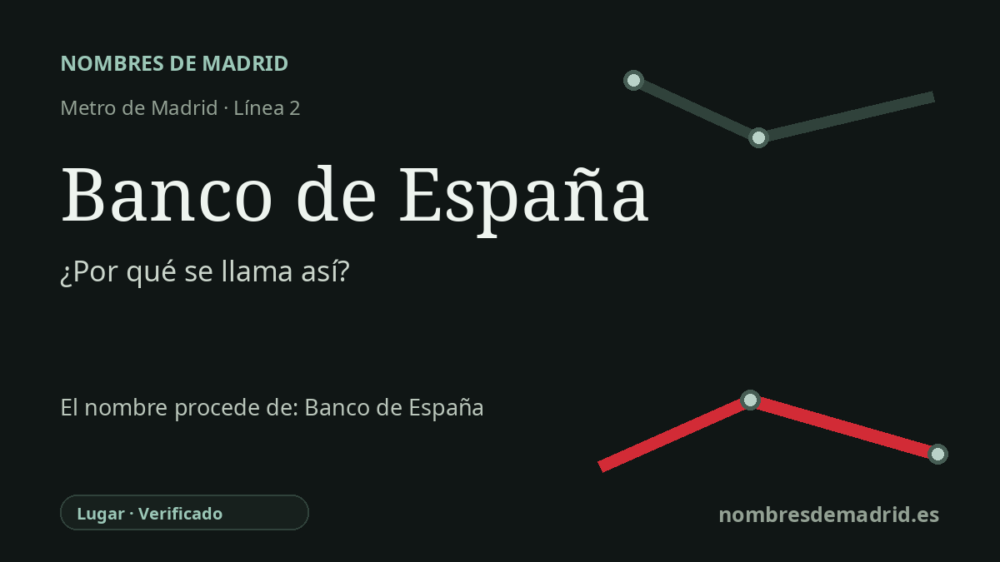

Publicado el · Investigación de Nombres de Madrid · Cómo verificamos cada origen · 7 fuentes consultadas
Respuesta rápida
La estación de Banco de España debe su nombre a la sede del banco central que preside la esquina de la calle de Alcalá, el paseo del Prado y la plaza de Cibeles. Se abrió con la línea 2 en junio de 1924, después de que el nombre de proyecto Castelar fuese sustituido durante la construcción.
La historia del nombre
La estación de Banco de España toma su nombre de la sede del Banco de España situada justo a su lado, uno de los edificios emblemáticos de la plaza de Cibeles. La parada se encuentra bajo la calle de Alcalá, entre el entorno de Barquillo y Cibeles, de modo que el nombre funciona como una referencia urbana directa: al salir del metro, el viajero queda junto al banco central español.
Detrás del nombre de la estación hay una institución anterior al propio edificio. El Banco de España remonta su trayectoria al Banco Nacional de San Carlos, fundado en 1782 por real cédula de Carlos III, y la denominación actual Banco de España fue adoptada por la Ley de 28 de enero de 1856. En 1874 recibió el monopolio de emisión de billetes para la península y las islas, y la legislación bancaria de 1921 contribuyó a configurarlo como auténtico banco central.
La sede de Cibeles llegó después. El banco adquirió el solar del antiguo palacio del marqués de Alcañices, en la esquina de la calle de Alcalá con el paseo del Prado, y sus arquitectos Eduardo de Adaro y Severiano Sainz de la Lastra redactaron el proyecto definitivo después de que el concurso público no satisficiera a la comisión de obras. La primera piedra se colocó el 4 de julio de 1884 y el edificio se inauguró el 3 de marzo de 1891; la documentación institucional del Banco de España lo describe como ecléctico-historicista, no simplemente neoclásico.
La historia del Metro añade un matiz interesante. La ficha histórica de Museos Metro de Madrid sitúa Banco de España en el tramo inaugural Ventas-Sol de la línea 2, abierto el 14 de junio de 1924, y recuerda que desde esta estación se planteó una conexión con una línea de la Gran Vía que no llegó a realizarse. También documenta que algunos nombres iniciales del proyecto cambiaron durante la construcción: Castelar pasó a llamarse Banco, e Independencia-Velázquez pasó a llamarse Retiro. Castelar aludía al antiguo nombre de la actual plaza de Cibeles, pero el nombre público terminó siguiendo al banco que dominaba la esquina.
Por tanto, el origen del nombre está muy bien apoyado, aunque algunas anécdotas conocidas conviene manejarlas con prudencia. La sede alberga la famosa Cámara del Oro, y publicaciones del Banco de España la sitúan dentro de la sede central de Cibeles; sin embargo, afirmar que está exactamente bajo la fuente o que es una de las cámaras más seguras del mundo suele depender de relatos periodísticos o populares y no es necesario para explicar la denominación de la estación. La prueba más sólida es más sencilla: la parada fue nombrada por el edificio y la institución del Banco de España situados junto a ella.